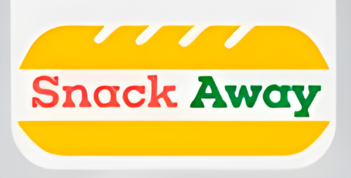

Kinshasa
Midi approche…
Où est-ce
qu'on mange ?
Là où les murs sont jaunes…

Pour ceux qui aiment le croustillant :
Zinger
Burger
Crispy chicken
Pour ceux qui préfèrent le sandwich :
Sandwich
Teriyaki
Et pour tous les autres :
Fresh salads
Crispy chicken
Snacks
Cold smoothies
Tasty burgers
(c'est écrit sur nos murs)
Kinshasa
On vous attend !